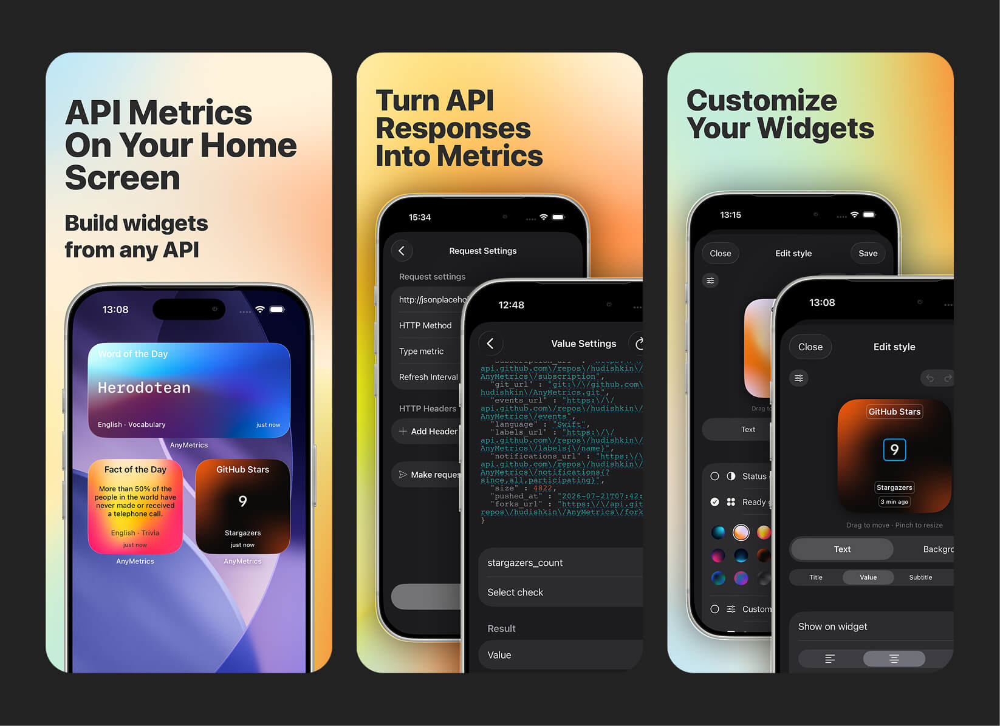

iOS 16+ · Free · Open source
Any HTTP endpoint → a live widget on your iPhone.
Point AnyMetrics at a REST API, a JSON service, or a web page. Extract the value you care about. Pin it to your Home Screen.

Three steps from endpoint to widget
-
Request
GET
URL, method, headers, and body. The phone calls your endpoint directly.
-
Extract
stars
A JSON path, an HTML selector, or the HTTP status. One value comes out.
-
Widget
9
Pin it to the Home or Lock Screen. It refreshes on the schedule you pick.
What it does
-
Custom HTTP
GET, POST, PUT, DELETE, and HEAD, with your own headers and body.
-
Parsing
JSON paths with filters and aggregates, CSS selectors, or a status check.
-
Widgets
Home Screen and Lock Screen sizes. Glass, Card, Plain, or your own colors and photo.
-
Gallery
Ready-made metrics from the community. Add one with a tap, or share yours.
-
On your device
API keys stay on the iPhone. Requests go straight to the endpoint you set.
-
Optional AI
Describe what to track. The assistant finds a public source and builds the metric.
Widgets, metrics, and the Gallery work without an account. Sign-in is only for AI generation.